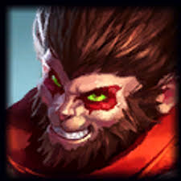
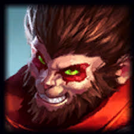

Mecânica e treino constante é o diferencial de um Top Laner competente!
a Toplane é repleta de "solo kills" e duelos incríveis durante toda a rota

 

Exemplos de campeões duelistas
Um "split-push" é fundamental de um toplaner. Isso é, puxar a rota e levar as torres.
Normalmente um campeão do top é apto a levar torres com facilidade e alguns, como Yorick, é ESPECIALIZADO nisso!